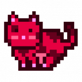
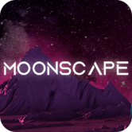
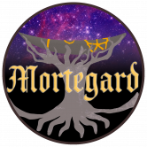

SpaceY 2025 SpaceY 2025 是世界上第一个基于区块链的“即玩即赚”的带有 NFT 的 AAA 塔防游戏。 3D沙盒游戏提供开放丰富的游戏体验，为玩家提供大量边玩边赚钱的机会。 SpaceY 2025 的故
Spirit Orb Pets v0 Spirit Orb Pets v0 是婴儿宠物的游戏前合集！为了准备可交互的 v1 宠物，这些小家伙充当了早期的会员代币，将获得 $CARE 代币空投、物品 NFT 空投和独特的不和谐角色！今天
SportsDapp SportsDapp 是区块链上的 Sports Fantasy 应用程序，用户可以在其中预测和制定即将到来的比赛事件的策略。看看我们的测试版，你想要的一切都在你的手机里！ 1. 您的游戏您的规
Squid NFT World Squid NFT World 是一款由 Biswap 提供支持的 P2E 游戏，具有多种加密奖励。 游戏的关键区别点： 多奖励池：未来用户将获得多种代币奖励：BSW、BNB等。 推荐计划：推荐
SquidVerse3D SQUIDVERSE 3D 是一个基于区块链技术的革命性创新去中心化金融游戏项目。该项目将形成自己的自给自足生态系统，直观地将多个公用事业连接在一起，形成一个称为 Squidverse
Stacks Degens Stacks Degens 是一家区块链技术公司，在创建与 Stacks 区块链集成的游戏应用程序方面处于最前沿。通过将区块链技术应用于我们最喜欢的游戏，我们可以为玩家提供经济激
Stake Them ALL 在由 HDX20 代币提供支持的以太坊和 Tron（TRX）区块链上推出一款有趣且有益的物理游戏“STAKE THEM ALL”。 “STAKE THEM ALL”可立即在您的
Stake Them ALL (Tron Edition) 在由 HDX20 代币提供支持的以太坊和 Tron（TRX）区块链上推出一款有趣且有益的物理游戏“STAKE THEM ALL”。 “STAKE THEM ALL”可立即在您的
Staking Saloon Staking Saloon 是 Seascape 最初的模块化 DeFi 小游戏系列中的最后一个。 这是第一款完全基于 Seascape 的原始 NFT 的 Scapes 游戏。 Stake Scapes for Crowns 奖励，可在 Seascape 生态系统的任何地方使用。 寻找基于角色
Star Atlas Star Atlas 是从最先进的区块链、实时图形、多人视频游戏和去中心化金融技术的融合中出现的下一代游戏元世界。 使用 Unreal Engine 5 Nanite 的实时图形技术可实现电影级视频游
Starcadia 关于收藏 欢迎来到官方geme STARCADIA！ 一种有趣的新方式来投资 Wax 区块链！ 与探险家一起加入 starcadia 社区。 通过动态的 Shoot’em Up 游戏，您将沉浸在新复古
StarCrazy 什么是星狂？ StarCrazy 是基于 IoTeX 平台构建的最新区块链 Play-to-Earn 游戏。 IoTeX 具有 5 秒的交易最终性和几分之一美分的交易成本。这使得 StarCrazy 成为在线游戏市场上对玩家更友好的“
StarMiner 矿工，即 NFT，是从 Box 中诞生的。 玩家应在挖矿前使用 $ORE 代币购买盒子以赚取收益。 当一个盒子被打开时，一个独特的 StarMiner Character (SMC) NFT 被铸造出来。 有四个采矿星球
StarMon Star Monster Metaverse是一款基于BSC（Binance Smart Chain）的3D Play to Earn游戏。 Starmon Metaverse 构建了一个虚拟世界：Andres Land。 有
STARSHIP StarShip 是币安智能链上的一种山寨币，旨在应对困扰当今加密货币市场的常见“地毯式拉动”策略。 StarShip 于 2021 年 4 月 30 日推出，在交易的第一个小时内，市值从 15,000 美元
StarWarsCat Star Wars Cat GameFi是一款全新的NFT经济模型Gamefi，由星际元宇宙通过培育、繁衍、星际冒险PVE、PVP组成。 SWCAT 是 Star Wars Cat 的原生代币。 您可
STEPON STEPON 是一款内置 Game-Fi 和 Social-Fi 元素的 Web3 生活方式应用程序。 STEPON 是一款具有 Social-Fi 和 Game-Fi 元素的 Web3 生活方式应用程序。 配备 NFT 运动鞋的用户——在户外散步、慢跑或跑步以赚取 S
Stickman's Battleground Stickman’s Battleground 是一款#NFT 游戏，拥有多种游戏模式供玩家体验。 特别是，PvE 游戏模式允许玩家通过由先进的抗通胀机制调节的平衡代币经济学轻松赚取收益。 最
Strike Crypto Metaverse Strike Crypto Metaverse 是一款基于币安智能链的 NFT、Play-to-Earn 游戏。 该游戏适用于热爱这项运动的玩家。 我们的想法是交付一个精心设计和计划的 NFT Metaverse 项
stryking.io stryking.io 将利用区块链技术通过来自体育界的官方授权数字收藏品创造引人入胜的用户体验。 stryking.io 上的体育迷将能够收集、交易、竞争和赚钱——这一切都与激情有关！
Moon Robots Moon Robots是一款即将推出的跨链 NFT DeFi 策略/RPG P2E 游戏，将于 2022 年第二季度在 Harmony 区块链上发布。此次发布所选择的网络快速、安全、高效，将为玩家提
 MoonCatRescue 从月球上救出 MoonCats 并将它们带到以太坊区块链上，在那里它们将安全并过上充实的 MoonCat 生活。我们设计了一艘宇宙飞船，采用最新的垃圾箱技术，最多可容纳 25,600 只 M
Moonie NFT 在 Moonieverse 中无处不在的 $MNY 代币。它的需求是由游戏体验和有吸引力的奖品驱动的。Token，以独特的方式将游戏内的 NFT 与 DeFi 机制连接起来。 进入Mooniev
 Moonscape 在 Moonscape 中，玩家探索未来主义的月亮，使用 DeFi 功能增强他们的城镇，并为他们在游戏中花费的时间获得奖励。在这款下一代 web3 战略史诗中，玩家将创建城市、争夺
 Mortegard Mortegard 是一款为 Polygon Network 打造的奇幻王国游戏。在 Kingdom Building 客户端中，您拥有并放置城堡 (ERC-1155 NFT) 以获取土地，然后您可以使用这些土地进一步发展您王国的经济。您的王国产生
MotoGP™ Ignition MotoGP 是第二个 REVV 项目，利用 NFT 赋予玩家权力。扮演团队经理的角色，在这个管理游戏中与他人正面交锋！在这里，您可以最大化您的资产收藏和您的战略赛车知识
Drunk Robots Drunk Robots 是一款由 Liquidifty.io 团队提供支持并建立在 Binance Smart Chain 之上的赚钱游戏。 在 Drunk Robots 中，你的主要任务是生存并占领被醉酒的垃圾机器人吸收的城市，他们唯一的兴趣是 $METAL 啤
Duckie Land Duckie Land 是一款运行在区块链上的元界多平台（PC、Android、IOS 和 VR）多人在线游戏，每个 Duckie 都是不可替代的代币或 NFT。数以百万计的人可以
Dvision Network Dvision Network 是一个多链元界平台，建立在以太坊网络和币安智能链之上，并由 DVI 实用程序和治理令牌提供支持，跨越其所有平台支柱。 Dvision 分为 3 个主要平台支柱，即 NFT
Earncraft Earncraft 是一款玩 2 赚钱游戏，玩家可以在玩游戏的同时获得收入。它是一个免费的兼容 Minecraft 服务器，为每个玩家集成了 Binance 智能钱包。使他们能够支付其他玩家代币。 Earncraft
Ecchicoin NFT 市场将有 2 个部分：(1) 官方市场，用户可以在其中购买官方 EcchiCoin NFT（供应非常有限）和 (2) 黑市，这是一个允许用户出售自己的任何 NFT 的开放市场。 EcchiTrack Dapp
EggChain Project EggChain 是第一个进化的 DeFi，您可以在其中种植 NFT。 EggChain 计划成为#BSC 中的教学平台游戏。 该项目是一款类似于 Pokemon 的加密游戏，专注于向新人传授有关区